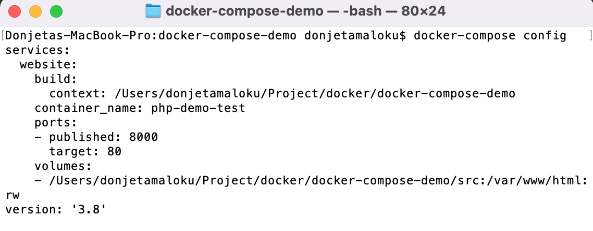
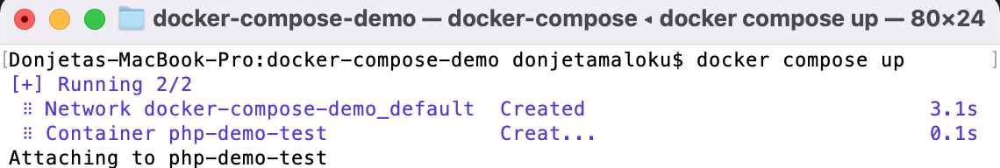
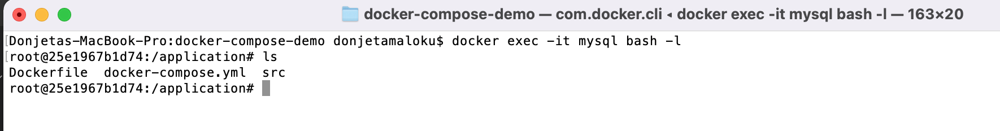
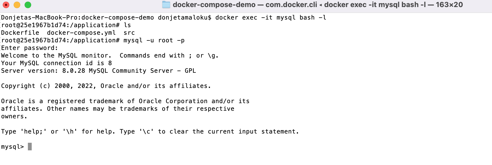
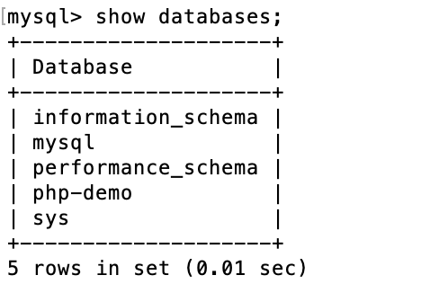

Në artikullin e parë kemi bërë një prezentim të shkurtër për të parë se çfarë është Docker, si mund ta instaloni dhe si mund ta konfiguroni Dockerfile për një aplikacion bazik në PHP. Në këtë artikull do të tregojmë si mund ta përdorim Docker Compose si dhe do të ndërtojmë një aplikacion të thjeshtë në PHP që do të komunikojë me MySQL.
Docker Compose #
Në artikullin e kaluar mësuam si të krijojmë një Dockerfile dhe që përmes komandave docker build dhe docker run mund të ndërtojmë dhe të ekzekutojmë një kontejner. Mirëpo çfarë nëse duam të ekzekutojm më shumë se një kontejner? Me siguri që do të jetë e shumë lodhshme të ekezkutojm këto komanda më shumë se një herë.
Për këtë ka zgjidhje, dhe ajo është që të përdorni Dcoker Compose, një skedar që përmbanë një bashkësi të instruksioneve për të përformuar një veprim.
Ashtu siq kemi krijuar Dockerfile për të përcaktuar se si duket imazhi juaj, në skedarindocker-compose.yml mund të përmendni imazhin(et) që dëshironi të përdorni, si dhe parametrat e komandave të ekzekutimit dhe ndërtimit të docker. Për të kuptuar më mirë do të marrim një shembull duke krijuar skedarin tonë të parë docker-compose.yml.
Së pari hapeni terminalin tuaj dhe shikojeni versionin e docker compose në makinën tuaj duke shkruar këtë komand.
docker-compose --version

Do të krijojmë një skedar bazik të docker compose, për shembullin në artikullin e parë.
version: '3.8'
services:
website:
container_name: php-demo
build:
context: ./
dockerfile: Dockerfile
volumes:
- ./src:/var/www/html
ports:
- 8000:80
Në listën e mëposhtme keni përshkrimin e secilit seksion të docker-compose.yml:
- Në rreshtin e parë duhet të shkruani versionin e docker compose.
servicespërmbanë një listë të të gjitha veglave/serviset që keni për qëllim të ekzekutoni. Unë e kam emëruarwebsitepër arsye se do printojmë një titull në shfletues, por ju mund ta emëroni edhe ndryshe, nuk ka rëndësi. Duhet të mbani mend se këtë emer do ta përdorim për të komunikuar me kontejner të tjerë.container_namekëtu duhet të vendosni emrin e kontejnerit.imageduhet të vendosni emrin e imazhit.- Nën seksioni
buildju shihni se kemi (context) që do të thotë është duke kërkuar për Dockerfile. Pra duhet të shkruani direktoriumin se ku gjendet Dockerfile i juaj.
Skedari i juaj docker-compose.yml është gati, përpara se të ekzekutoni është mirë të shikojm nëse konfigurimi në skedarin tonë është në rregull duke ekzekutuar në terminal komandën docker-compose config.

Siq shihet edhe në foton paraprake pra konfigurimet tona kan qenë në rregull. Tani mund të ekzekutojm docker compose up për të krijuar imazhin(nëse nuk ekziton) dhe për të krijuar kontejneret.

Tani do të instalojmë MySQL. Kam zgjedhur MySQL v8 ndërsa ju mund të zgjedhni edhe ndonjë version tjetër. Do të editojmë docker-compose.yml dhe do të shtojmë konfigurimet për të instaluar MySQL.
version: '3.8'
services:
mysql:
image: mysql
container_name: mysql
restart: always
environment:
- MYSQL_ROOT_PASSWORD=.rootpassword.
- MYSQL_DATABASE=php-demo
- MYSQL_USER=admin
- MYSQL_PASSWORD=.mysqlpassword
ports:
- "8082:3306"
website:
container_name: php-demo
build:
context: ./
dockerfile: Dockerfile
links:
- "mysql:database"
volumes:
- ./src:/var/www/html
ports:
- 8000:80
depends_on:
- mysql
Në këtë konfigurim ju mund të shihni se kemi shtuar një seksion të ri envrionment i cili përmbanë disa parametra që lidhen me serverin MySQL. Porti i parazgjedhur 3306 është mapuar(eng. mapped) me portin 8082. Seksioni restart: gjithmonë nënkupton kurdo që fillon kontejneri, MyQL do të fillojë po ashtu. Mund të keni vërejtur se kemi shtuar edhe seksionin depends_on, kjo nënkupton që për të filluar servisi PHP, duhet sê pari të filloj serveri MySQL.
Duhet të bëjmë disa ndryshime në Dockerfile, ku do të shtojmë konfigurime për instalimin e MySQL.
FROM php:latest
RUN apt-get update \
&& apt-get install -y
RUN docker-php-ext-install pdo pdo_mysql mysqli
Ju duhet të instaloni një paket menagjuse për të ekzekutuar komandat e juaja mbrenda kontejnerit. Psh. apt-get është një paket menagjuse që ndihmon në trajtimin e paketave në Linux.
Për më shumë detaje ju lutem lexoni më shumë për Paketat Menagjuse në Ubuntu.
Kemi instaluar PHP extension si dhe MySQL. Në këtë rast docker ofron docker-php-ext-install për te instaluar shtesat për PHP. Nëse dëshironi mund të instaloni edhe paketen menagjuse të famshme PHP Composer.
Për të implementuar ndryshimet që i kemi bërë në Dockerfile ne duhet të ekzekutojm komandën docker-compose up --build. Nëse nuk e shtojm --build nuk do ti mer ndryshimet e reja që i kemi shtuar.
Ndoshta jeni duke pytur veten se si mund të shohim nëse është instaluar paketa menagjuse ose a është duke ekzekutuar/running MySQL?
Lidhshmëria në mes kontejnerëve në Docker #
Tash do të shohim si është bërë lidhshmëria në mes kontejnerëve në Docker.
Përmendëm më lart se Docker na lejon me i ekzekutu komadat në kotejnerin që kemi krijuar dhe këtë mund ta bëjm duke ekzekutar komandën docker exec. Vihet pytja si mund të kyqem në MySQL? Së pari ne duhet të dijm emrin e imazhit për MySQL, dhe këtë informat e marin duke ekzekutuar docker ps -a në terminal.
Shikoni konfigurimet në docker-compose.yml që kemi bërë dhe e shihni që emrin e kontejnerit kemi vendos mysql-server-80. Dhe përgjigjen e pytjës që bëm mund ta marrim duke ekzekutuar këtë kommand në terminal: docker exec -it mysql bash -l
-it do të thot një terminal jo aktive bash Unix shell dhe gjuhe komanduse command language

Tash jemi mrena kontejnerit, na lejohet të shkruajm komanda të Linux pasi kemi instaluar paketen menagjuse apt-get. Shkruani komandën ls ose çfarë do komande tjetër për të testuar.
Për tu kyqur në databazë duhet të shkruani këtë komand mysql -u root -p.
-uështë user -p është password

Nëse dëshironi të shihni të gjitha databazat, duhet të shkruani në terminalin tuaj show databases;.

Pra ktu treguam se a është ekzekutar MySQL brenda Docker. Por si mund të ndërveproj MySQL jasht docker? Si mund të bëje lidhjen MySQL client me MySQL server mbrenda kontejner? Këtë lidhje mund ta bëjm nëse bëjm port forwarding.
Së pari duhet të dijm id e kontejnerit si dhe portin dhe këto informata mund të gjejm duke ekzekutuar kommanden docker ps -a. Take screenshot. Mund të shihni se si Porti është percjell si dhe në cilin IP.
Në rastin ton kemi 0.0.0.0:8082->3306/tcp. Pra 0.0.0.0 është host dhe porti është 8082.
Një komand tjeter se si mund të shihni portin e një kontejnerit docker port <containerid>.
Ndërveprimi në mes disa kontejnerve në Docker #
Pra kuptuam se si docker mund të kominikoj jasht, por çfarë nëse kontejnerët duhet të ndërveproj mes vete?
Një mënyr është të lidhemi nëpermes IP së brendshme. Këtë mund të shihni duke shkruar komandën në terminalin tuaj docker inspect <container-id>, ky container-id është ID e kontejnerit për MySQL.
Tash do të editojm index.php dhe të shkruajm kodin për të bërë lidhjen me databazë.
<?php
$host = 'mysql';
// Database use name
$user = 'MYSQL_USER';
//database user password
$pass = 'MYSQL_PASSWORD';
// check the MySQL connection status
$conn = new mysqli($host, $user, $pass);
if ($conn->connect_error) {
die("Connection failed: " . $conn->connect_error);
} else {
echo "Connected to MySQL server successfully!";
}
?>
Pasi që keni përfunduar editimin e index.php mund te shikoni në shfletues http://localhost:8000 nëse është printuar teksti Connected to MySQL server successfully!.
curl http://localhost:8000
Nëse doni të ndalni docker-compose, atëher duhet të shkruani këtë komand docker-compose down.
Konkluzioni #
Në këtë artikull mësuam se si mund të konfigurojm mjesdise të shumëfishta me ndihmën e docker-compose, si dhe shembullin për docker-compose mund të gjeni ne Github.
Nëse keni ndonjë pyetje ose feedback ju lutem ndjehuni të lirë të postoni më poshtë.